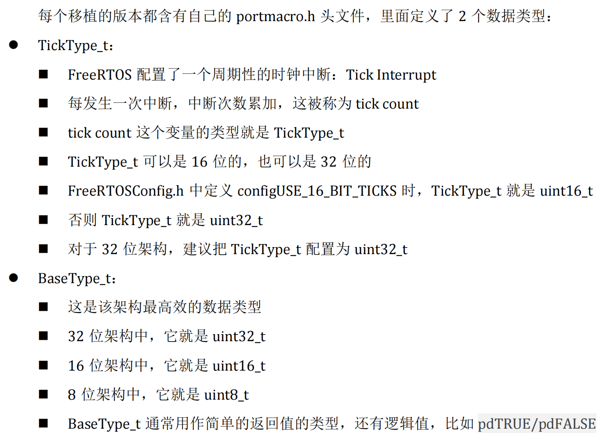
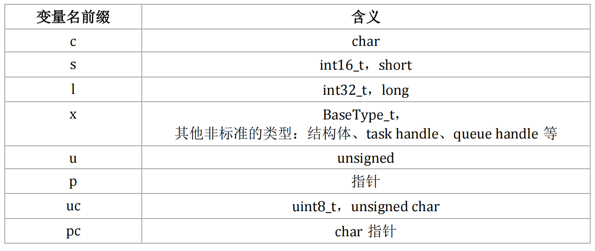
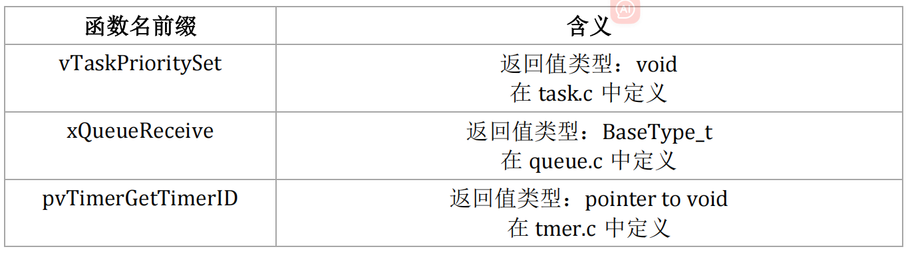
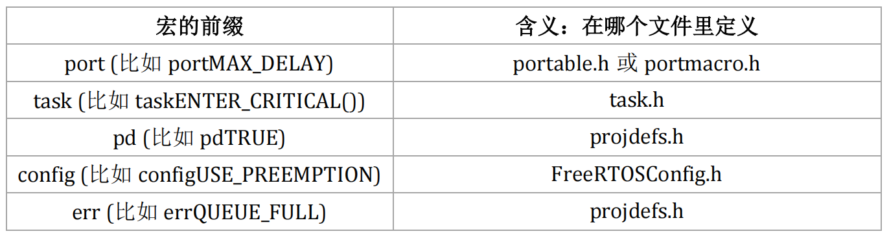
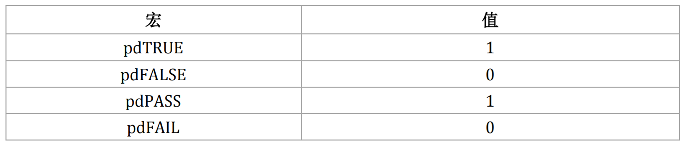

<!DOCTYPE lake>
<blockquote data-lake-id="u8ba13207" id="u8ba13207"><p data-lake-id="ue90346ea" id="ue90346ea"><span data-lake-id="uf87f7a15" id="uf87f7a15">参考:</span></p><p data-lake-id="u9d2e7553" id="u9d2e7553"><a data-lake-id="u21146327" href="https://freertos.org/zh-cn-cmn-s/Documentation/02-Kernel/06-Coding-guidelines/02-FreeRTOS-Coding-Standard-and-Style-Guide" id="u21146327" rel="noopener noreferrer" target="_blank"><span data-lake-id="ue6e00c1b" id="ue6e00c1b">https://freertos.org/zh-cn-cmn-s/Documentation/02-Kernel/06-Coding-guidelines/02-FreeRTOS-Coding-Standard-and-Style-Guide</span></a></p></blockquote><h2 data-lake-id="nTGai" data-lake-index-type="2" id="nTGai"><span data-lake-id="ue6638a31" id="ue6638a31">数据类型</span></h2><p data-lake-id="u62dd8efe" id="u62dd8efe"></p><h2 data-lake-id="JV7xt" data-lake-index-type="2" id="JV7xt"><span data-lake-id="u475ceff4" id="u475ceff4">变量名</span></h2><p data-lake-id="uddf3dff9" id="uddf3dff9"><span data-lake-id="u795f4a55" id="u795f4a55">变量名前缀</span></p><p data-lake-id="uf9c0dc1b" id="uf9c0dc1b"></p><h2 data-lake-id="Pbpp8" data-lake-index-type="2" id="Pbpp8"><span data-lake-id="u91eb12e0" id="u91eb12e0">函数名</span></h2><p data-lake-id="ue480f9bb" id="ue480f9bb"><span class="lake-fontsize-12" data-lake-id="ud02357a1" id="ud02357a1" style="color: rgb(0,0,0)">函数名的前缀有 2 部分：返回值类型、在哪个文件定义。</span></p><p data-lake-id="uc7d3820c" id="uc7d3820c"></p><h2 data-lake-id="BHtyQ" data-lake-index-type="2" id="BHtyQ"><span data-lake-id="u02c18c1a" id="u02c18c1a">宏定义</span></h2><p data-lake-id="u0253d962" id="u0253d962"><span class="lake-fontsize-12" data-lake-id="uebb31a30" id="uebb31a30" style="color: rgb(0,0,0)">宏的名字是大小，可以添加小写的前缀。前缀是用来表示：宏在哪个文件中定义。</span></p><p data-lake-id="u105052b0" id="u105052b0"></p><p data-lake-id="u917a9c29" id="u917a9c29"><span data-lake-id="u28b8a3cf" id="u28b8a3cf">通用的宏定义如下:</span></p><p data-lake-id="ucfcb9e24" id="ucfcb9e24"></p><p data-lake-id="ued392e3c" id="ued392e3c"><br/></p>